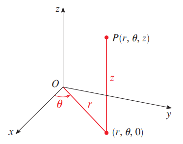
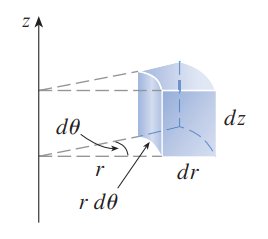
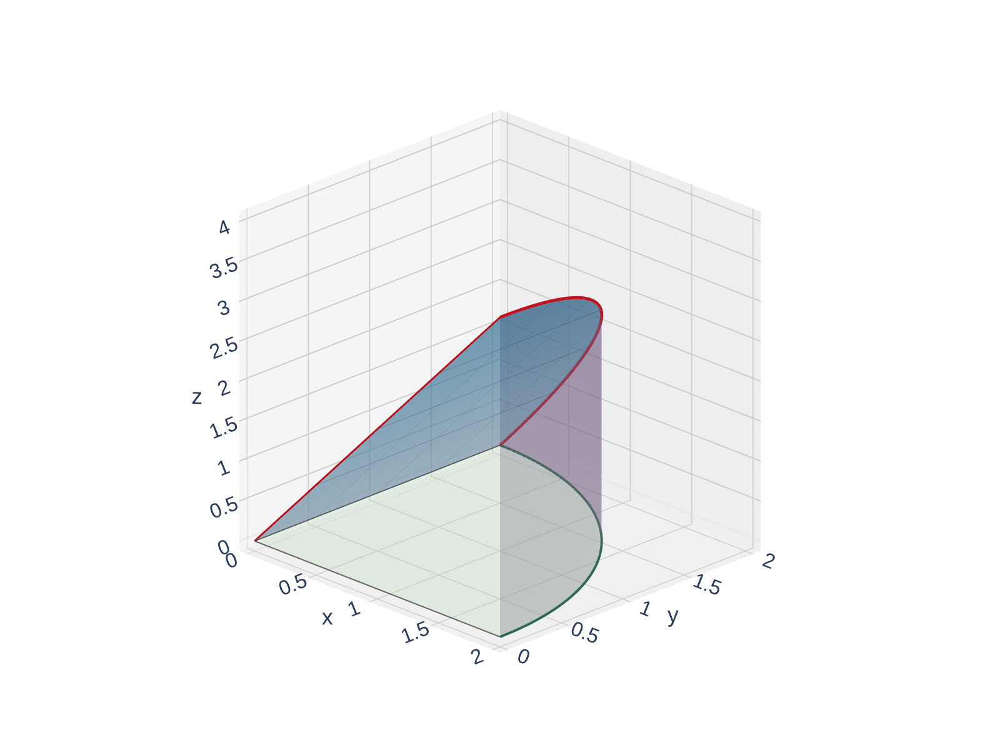
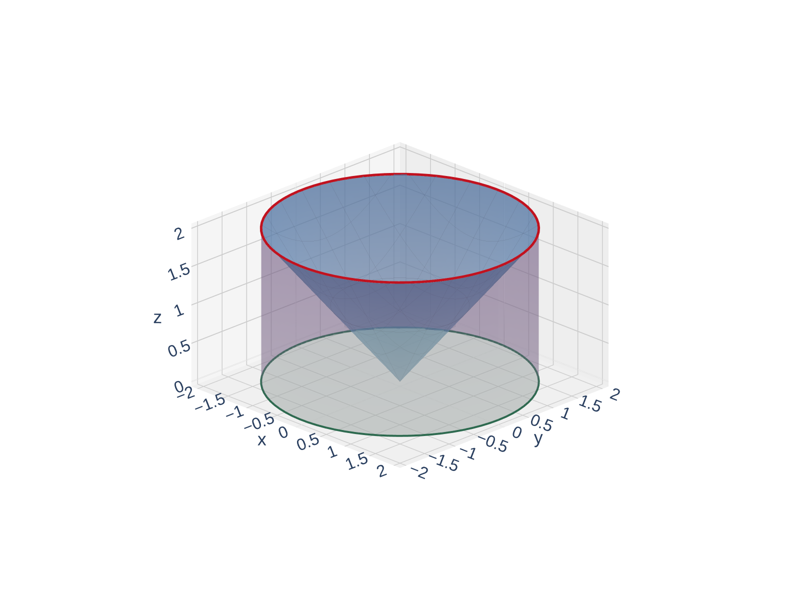

Triple Integrals in Cylindrical Coordinates
MTH 310 — Calculus III
Multiple Integrals
In Section 15.4 we saw that polar coordinates simplify double integrals over circular regions. Now we need the same trick for triple integrals over solids with circular symmetry.
Examples of circularly symmetric solids:
In Cartesian coordinates, the limits involve \(\sqrt{...}\) expressions from solving \(x^2 + y^2 = r^2\). In cylindrical coordinates, these become simply \(r = \text{const}\) — much cleaner.
Cylindrical coordinates are just polar coordinates with a \(z\)-axis attached. If the solid has symmetry about the \(z\)-axis (or the integrand involves \(x^2 + y^2\)), cylindrical is the way to go.
A point in 3D space can be described by \((r, \theta, z)\) where:

Think of it this way: stand at the origin, face along the positive \(x\)-axis, turn by angle \(\theta\), walk out a distance \(r\) — that puts you at \((r,\theta,0)\) in the \(xy\)-plane. Then ride the elevator up (or down) by \(z\).
Cylindrical \(=\) polar \(+\) height. The “cylindrical” name comes from the fact that \(r = c\) is a cylinder centered on the \(z\)-axis.
Cylindrical to Cartesian:
\[x = r\cos\theta, \qquad y = r\sin\theta, \qquad z = z\]
Cartesian to Cylindrical:
\[r^2 = x^2 + y^2, \qquad \tan\theta = \frac{y}{x}, \qquad z = z\]
Common surface conversions:
| Cartesian | Cylindrical | Surface |
|---|---|---|
| \(x^2 + y^2 = 4\) | \(r = 2\) | Cylinder of radius 2 |
| \(z = \sqrt{x^2 + y^2}\) | \(z = r\) | Cone |
| \(z = x^2 + y^2\) | \(z = r^2\) | Paraboloid |
| \(x^2 + y^2 + z^2 = 9\) | \(r^2 + z^2 = 9\) | Sphere of radius 3 |
| \(z = 2x\) | \(z = 2r\cos\theta\) | Plane through \(z\)-axis |
The key substitution is \(x^2 + y^2 = r^2\). Any equation involving \(x^2 + y^2\) becomes simpler in cylindrical coordinates.
In Cartesian: \(dV = dx\,dy\,dz\).
In cylindrical, we need the same extra factor we saw in polar coordinates.
A small cylindrical “wedge” at position \((r, \theta, z)\) has:
So the volume element is:
\[\boxed{dV = r\,dz\,dr\,d\theta}\]
This is exactly the polar area element \(dA = r\,dr\,d\theta\) with a \(dz\) tacked on.

Don't forget the extra \(r\)! The factor \(r\) appears because the “width” of the wedge in the angular direction is \(r\,d\theta\), not just \(d\theta\).
Rewrite each equation in cylindrical coordinates:
Replace \(x^2 + y^2\) with \(r^2\) in each equation.
The pattern: replace \(x^2 + y^2\) with \(r^2\). That's the whole conversion for most equations we'll see.
Use cylindrical coordinates when:
Template for a cylindrical triple integral:
\[\iiint_E f(x,y,z)\,dV = \int_{\alpha}^{\beta}\int_{h_1(\theta)}^{h_2(\theta)}\int_{u_1(r,\theta)}^{u_2(r,\theta)} f(r\cos\theta,\, r\sin\theta,\, z)\;\underbrace{r\,dz\,dr\,d\theta}_{dV}\]
Typical order: \(dz\,dr\,d\theta\) (height first, then radial, then angular). But other orders are possible.
If you see \(x^2 + y^2\) in the region description or the integrand, think cylindrical.
Find the volume of the solid in the first octant that lies under the plane \(z = 2x\) and inside the cylinder \(x^2 + y^2 = 4\).
Convert the boundaries to cylindrical. What are the limits on \(\theta\)? On \(r\)? On \(z\)? Don't forget the \(r\) in \(dV\)!
Convert the boundaries to cylindrical:

Limits on \(\theta\): First octant means \(x \geq 0\) and \(y \geq 0\), so \(\theta \in [0, \pi/2]\).
Limits on \(r\): From \(0\) to \(2\) (inside the cylinder).
Limits on \(z\): From \(0\) (bottom) to \(2r\cos\theta\) (the plane). Note: \(z \geq 0\) requires \(\cos\theta \geq 0\), which is already guaranteed since \(\theta \in [0, \pi/2]\).
\[V = \int_0^{\pi/2}\int_0^{2}\int_0^{2r\cos\theta} r\,dz\,dr\,d\theta\]
Evaluate the integral:
Inner integral (\(dz\)):
\[\int_0^{2r\cos\theta} r\,dz = r \cdot 2r\cos\theta = 2r^2\cos\theta\]
Middle integral (\(dr\)):
\[\int_0^{2} 2r^2\cos\theta\,dr = 2\cos\theta \cdot \frac{r^3}{3}\Big|_0^2 = 2\cos\theta \cdot \frac{8}{3} = \frac{16\cos\theta}{3}\]
Outer integral (\(d\theta\)):
\[\int_0^{\pi/2} \frac{16\cos\theta}{3}\,d\theta = \frac{16}{3}\sin\theta\Big|_0^{\pi/2} = \frac{16}{3}(1 - 0) = \frac{16}{3}\]
\(V = \dfrac{16}{3}\). The cylindrical setup was clean because the cylinder became \(r = 2\) and the plane became \(z = 2r\cos\theta\). In Cartesian, the limits would involve \(\sqrt{4 - x^2}\).
Find the volume of the solid inside the cylinder \(x^2 + y^2 = 4\) between \(z = 0\) and the cone \(z = \sqrt{x^2 + y^2}\).
Convert the surfaces to cylindrical and set up \(\int\int\int r\,dz\,dr\,d\theta\). The full circle means \(\theta\) goes from \(0\) to \(2\pi\).

Convert:
\[V = \int_0^{2\pi}\int_0^{2}\int_0^{r} r\,dz\,dr\,d\theta\]
Inner: \(\displaystyle\int_0^{r} r\,dz = r \cdot r = r^2\)
Middle: \(\displaystyle\int_0^{2} r^2\,dr = \frac{r^3}{3}\Big|_0^2 = \frac{8}{3}\)
Outer: \(\displaystyle\int_0^{2\pi} \frac{8}{3}\,d\theta = \frac{8}{3} \cdot 2\pi = \frac{16\pi}{3}\)
\(V = \dfrac{16\pi}{3}\). When the \(\theta\)-integral has no \(\theta\)-dependent integrand, it just contributes a factor of \(2\pi\) (or the angular range).
\((r, \theta, z)\): polar coordinates \((r, \theta)\) in the \(xy\)-plane plus height \(z\).
\(x = r\cos\theta\), \(y = r\sin\theta\), \(z = z\), and \(r^2 = x^2 + y^2\).
\(dV = r\,dz\,dr\,d\theta\). Don't forget the extra \(r\)!
Cylinders, cones, paraboloids of revolution — any solid whose \(xy\)-cross-section is circular.
\(x^2 + y^2 = a^2 \to r = a\). \(\;z = \sqrt{x^2+y^2} \to z = r\). \(\;z = x^2+y^2 \to z = r^2\).
Coming up next: Some solids (spheres, cones centered at the origin) are even more naturally described by their distance from the origin rather than from the \(z\)-axis. That's where spherical coordinates come in — Section 15.8.
3, 9, 13, 17, 19, 23, 25, 31, 33